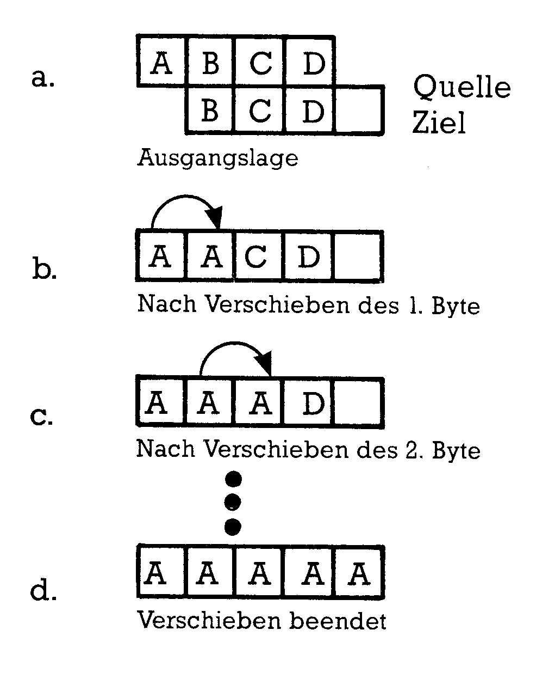
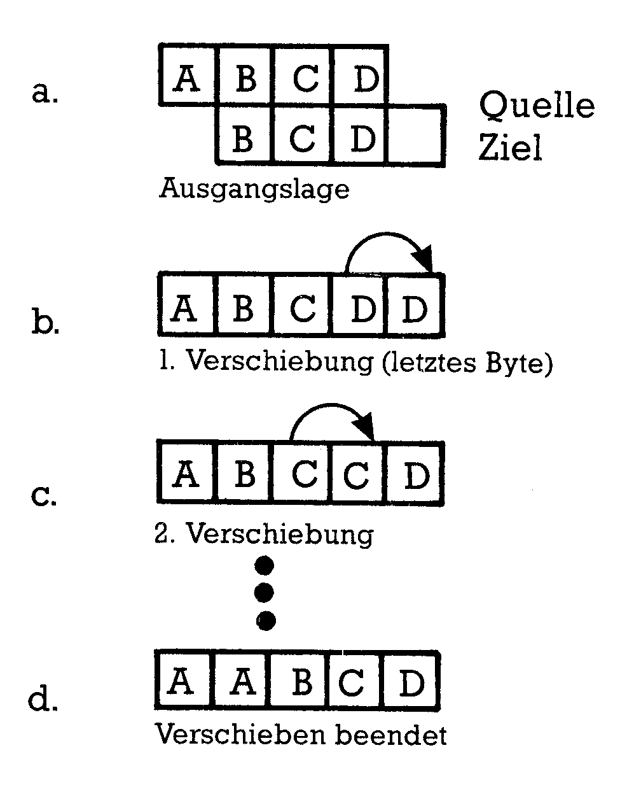
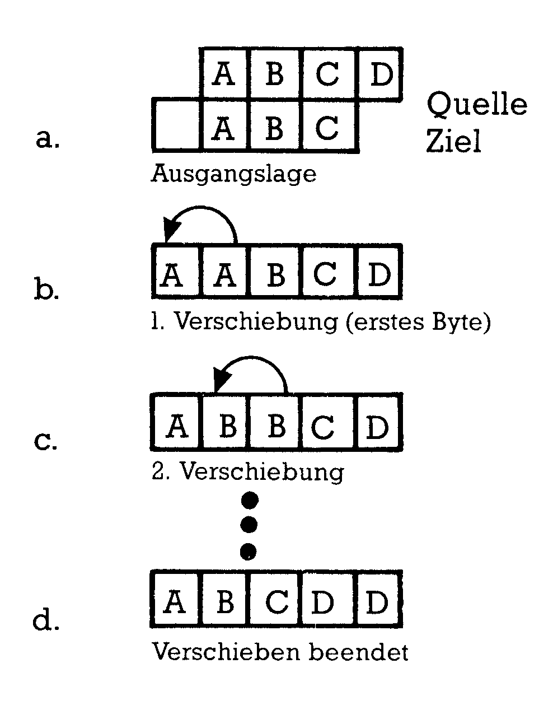
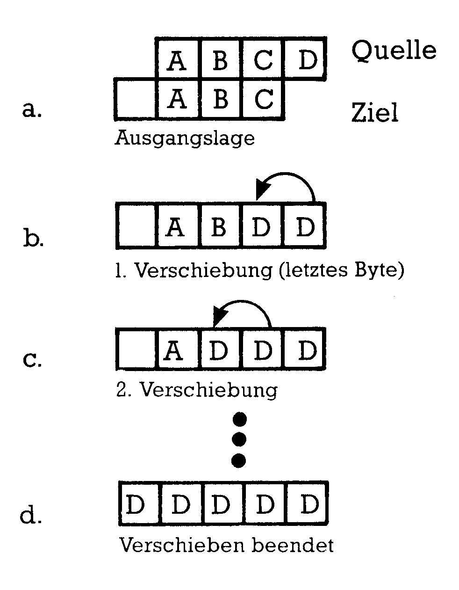
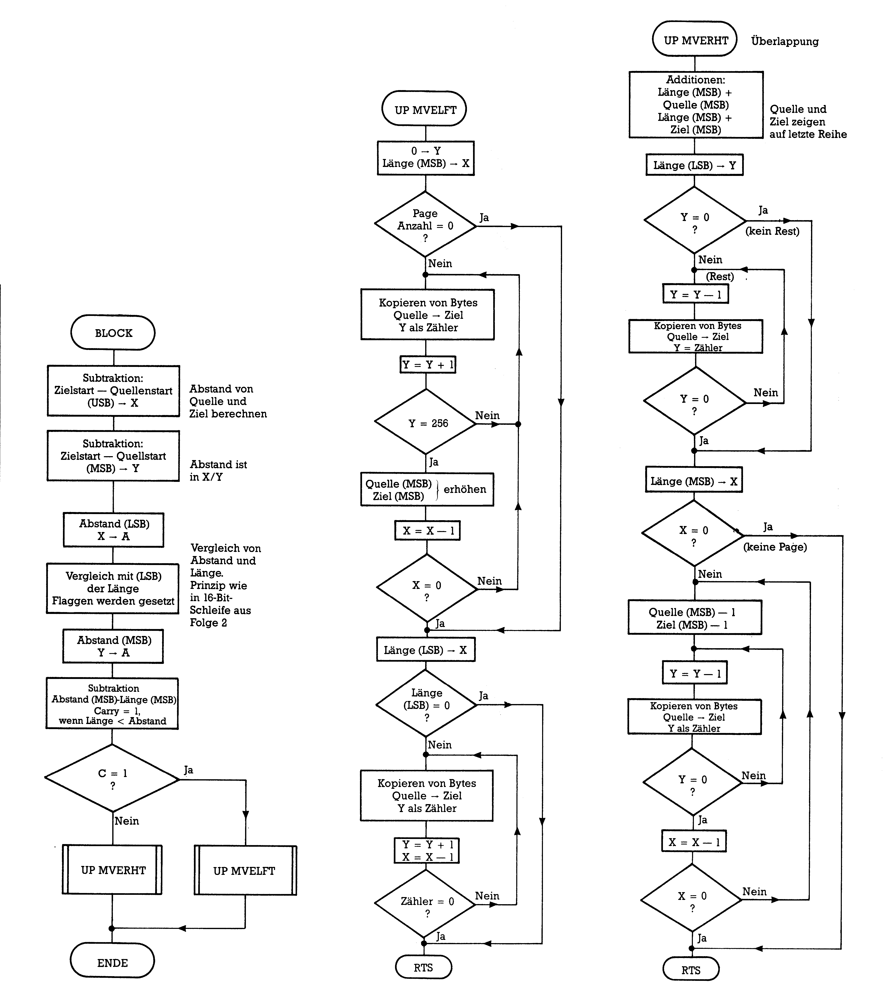

Von Basic zu Assembler (Teil 4)
Das Hauptaugenmerk wird in dieser Folge auf das Verschieben und Vertauschen von Speicherbereichen gerichtet. Des weiteren finden Sie noch Anwendungsvorschläge, um die Routinen richtig zu nutzen.
Endlich ist es soweit: Wie schon vor geraumer Zeit versprochen, lernen Sie nun die Blockverschieberoutine kennen, aber auch ihre Schwächen und einen Weg, Speicherbereiche fehlerfrei zu verschieben.
Eng mit dem Verschieben von Bereichen ist das andere Programm verwandt, das wir entwickeln. SWAP nennen wir es, und es soll Speicherbereiche miteinander vertauschen. Wie immer, so sind auch diesmal die Programme sowohl auf dem C 64 als auch dem C 128 einsetzbar.
Speicherblöcke verschieben
Häufiges Thema in Leseranfragen ist das Verschieben von Speicherbereichen. Das ist durchaus zu verstehen, denn mit einem Programminstrument, das beliebige Inhalte beliebig großer Speicherbereiche verschieben kann, läßt sich allerhand anstellen. So könnte man ein Basic-Programm vorübergehend beispielsweise nach $C000 legen, in der Zwischenzeit ein anderes laden und bearbeiten und dann das erste wieder herunterholen in den Basic-Speicher. Oder es wäre möglich, einen Hilfsbildschirm zu erstellen, diesen irgendwo im Speicher an einen sicheren Ort zu verlagern und ihn dann auf Tastendruck wieder hervorzuholen. Oder man könnte sich verschiedene Teile von Bildern erstellen, im Speicher ablegen und bei Bedarf in die aktuelle Bitmap blenden. Oder… Ihnen fallen bestimmt noch viele Anwendungen für ein solches Programminstrument ein.
Diejenigen unter Ihnen, vor denen nun ein C 64 steht, haben Glück: Im Betriebssystem des C 64 ist nämlich eine komplette und vor allem leicht ansteuerbare Blockverschieberoutine enthalten. C 128-Benutzer finden solch eine Routine zwar auch in ihrem Speicher vor (nämlich ab $F4EA8), die ist aber leider nicht zu verwenden, weil sie nicht einfach mit einem RTS endet, sondern noch allerlei unerwünschte Zeigeränderungen anstellt. Allerdings kann der C 128-Besitzer auch mit erheblichen Effekt auf den T-Befehl des eingebauten Monitors zugreifen. Auch von Basic aus ist das mit Hilfe des »programmierten Direktmodus« möglich. Wen näheres darüber interessiert, der sollte mal in folgendem Buch das Kapitel dazu nachlesen: Ponnath, »Grafikprogrammierung C 128«, Markt und Technik Verlag, MT857. Eine andere Möglichkeit für den C 128-Benutzer ist unser später noch vorzustellendes Programm BLOCK.
Sehen wir uns nun zunächst die im C 64-Interpreter enthaltene Blockverschieberoutine BLTUC an:
Das scheint also der Weg zur Benutzung dieser Routine zu sein: Man schreibt ein Basic-Programm, das die leidige Umrechnung der drei Adressen (Quellenstart, Quellenende +1 und Zielende +1) übernimmt und die errechneten LSB und MSB in die erforderlichen Abholspeicherstellen packt. Danach braucht man nur noch mittels eines SYS 41919 die BLTUC-Routine zu starten. Sollten Sie es mal probieren wollen, dann werden Sie einen Absturz des Programmes erleben. So geht es nicht, und zwar deshalb, weil der Basic-Interpreter die Speicherstellen $5F und $60 nach dem Belegen mit der Quellenstartadresse mit seinen Merkwerten überschreibt. Glücklicherweise enthält aber die Seite 3 eine Möglichkeit, Werte abholbereit für die Register so aufzubewahren, daß sie nach einem SYS-Befehl im Akku, dem X- und dem Y-Register zu finden sind. Die Zuordnung ist dann so:
| Name | Adresse | Register | |
|---|---|---|---|
| $ | dez. | ||
| SAREG | 30C | 780 | Akku |
| SXREG | 30D | 781 | X-Register |
| SYREG | 30E | 782 | Y-Register |
| SPREG | 30F | 783 | Stapelzeiger |
Wir schreiben nun die Quellenstartadresse statt nach $5F/60 zunächst nach 780 und 781. Der anschließende SYS-Befehl ruft zuerst ein kleines Maschinenprogramm auf, das die Werte in die richtigen Speicherzellen schreibt und dann BLTUC anspringt:
STA $5F
STX $60
JMP $A3BF
Beiliegend finden Sie ein kleines Basic-Programm, das all diese Aufgaben übernimmt: »BLTUC BAS« (Listing 1)
BLTUC BAS zeigt die Funktion von BLTUC anhand des Bildschirmspeichers. In den Zeilen 40 und 50 wird in die erste Bildschirmzeile — ab Position 1025 — eine fortlaufende Reihe von verschiedenen Zeichen geschrieben, die wir im nachfolgenden verschieben werden. Damit diese Zeichen sichtbar werden, müssen einige ältere Versionen des C 64 auch den Farbspeicher beschreiben. Das geschieht in der Zeile 40. Die Zeilen 54 und 56 erzeugen das kleine Maschinenprogramm, das die Belegung der Abrufzellen $5F, $60 und den Sprung in die BLTUC-Routine ausführt. Sie lesen den Dezimalcode des Maschinenprogrammes aus der DATA-Zeile in den Speicher ab 49152. Nun bereiten wir die erste Verschiebung vor: Hier soll einfach der ganze Bereich von 1025 bis 1063 um eine Zeile weiter geschoben werden, also nun bei 1065 beginnen. Damit das alles nicht ganz so schnell geht, sind noch einige kleine Warteschleifen ins Programm eingebaut worden. In den Zeilen 90 bis 110 trennen wir die in 70 und 80 benannten Start- und Endadressen auf in die MSB- und LSB-Werte und schreiben sie in die erforderlichen Speicherstellen 88 bis 91, beziehungsweise 780 und 781 ein. Zeile 120 vollführt nun mittels des SYS-Aufrufes die Verschiebung, was Sie auf dem Bildschirm erkennen können.
Auf Tastendruck gelangen Sie in den zweiten, den kritischen Teil des Programmes. Hier werden wir nun einen Fehler der BLTUC-Routine finden. Wir verschieben in diesem Teil den Inhalt des Speicherbereiches 1025 bis 1063 um eine Position abwärts, also in den Bereich 1024 bis 1062. Woran liegt es, daß hier plötzlich eine Fehlfunktion auftritt? Sehen wir uns dazu die BLTUC-Routine etwas genauer an. Als Programm BLTUC (Listing 2) finden Sie nachstehend ein Disassemblerlisting der BLTUC-Routine wie sie im C 64-Speicher ab $A3BF zu finden ist.
., a3bf 38 sec ., a3c0 a5 5a lda $5a ., a3c2 e5 5f sbc $5f ., a3c4 85 22 sta $22 ., a3c6 a8 tay ., a3c7 a5 5b lda $5b ., a3c9 e5 60 sbc $60 ., a3cb aa tax ., a3cc e8 inx ., a3cd 98 tya ., a3ce f0 23 beq $a3f3 ., a3d0 a5 5a lda $5a ., a3d2 38 sec ., a3d3 e5 22 sbc $22 ., a3d5 85 5a sta $5a ., a3d7 b0 03 bcs $a3dc ., a3d9 c6 5b dec $5b ., a3db 38 sec ., a3dc a5 58 lda $58 ., a3de e5 22 sbc $22 ., a3e0 85 58 sta $58 ., a3e2 b0 08 bcs $a3ec ., a3e4 c6 59 dec $59 ., a3e6 90 04 bcc $a3ec ., a3e8 b1 5a lda ($5a),y ., a3ea 91 58 sta ($58),y ., a3ec 88 dey ., a3ed d0 f9 bne $a3e8 ., a3ef b1 5a lda ($5a),y ., a3f1 91 58 sta ($58),y ., a3f3 c6 5b dec $5b ., a3f5 c6 59 dec $59 ., a3f7 ca dex ., a3f8 d0 f2 bne $a3ec ., a3fa 60 rts
Die Anatomie der BLTUC-Routine
Das ganze Programm besteht aus zwei Teilen. Im ersten davon werden Berechnungen angestellt über die Länge des zu transportierenden Bereiches und zwei Transportzeiger eingerichtet. Im zweiten Teil findet dann die eigentliche Verschiebung statt. Die erste 16-Bit-Subtraktion (Quelle bis Ende +1 minus Quelle-Start) legt das MSB der Länge ins X-Register (das enthält dann die Anzahl der zu transportierenden Pages) und das LSB ins Y-Register und in die Speicherstelle $22 (dort liegt dann die restliche Länge, die weniger als eine ganze Page beträgt). Der BEQ-Befehl stellt fest, ob überhaupt ein solcher Rest vorhanden ist und verzweigt ansonsten direkt in den Transportteil. Zwei weitere Subtraktionen (Quelle-Ende +1 minus Länge des Restes und Ziel-Ende +1 minus Länge des Restes) richten die Zeiger $5A/5B und $58/59 auf die Adressen der nächstniedrigeren ganzen Page. Der Rest befindet sich noch im Y-Register. Das X-Register dient als Page-Zähler. Der BCC-Befehl bei $A3E6 führt immer zum Sprung nach $A3EC, weil an dieser Stelle das Carry-Bit immer frei ist.
Danach beginnt der Transportteil. Er besteht im wesentlichen aus zwei ineinander verschachtelten Schleifen, von denen die innere Schleife Byte für Byte aus dem Quell- in den Zielbereich kopiert (dabei beginnt sie mit dem Rest), die äußere zunächst ebenfalls ein Byte überträgt und dann die MSB-Werte der beiden Zeiger ($59 und $5B) herunterzählt. Dabei wird auch jedesmal der Pagezähler (X-Register) um 1 reduziert.
Kopieren von oben und von unten
Wir stellen also fest, daß ein Bereich durch BLTUC immer von der höheren zur niedrigeren Adresse hin durchgearbeitet wird. Sowohl der Index Y als auch der Page-Zähler X werden heruntergezählt. Was das zur Folge hat, werden wir nun bei einer genauen Betrachtung aller möglichen Verschiebungsfälle schnell erkennen. Insgesamt acht sind zu unterscheiden:
- Quell- und Zielbereich überschneiden sich nicht. Der Zielbereich liegt oberhalb des Quellbereiches. Das Kopieren erfolgt von unten (also von der niedrigsten Adresse an aufwärts. Die Register werden hochgezählt). Das nennen wir den Fall 1.
- Gleiche Bedingungen wie in Fall 1. Aber das Kopieren geschieht nun von oben (also von der höchsten Adresse an abwärts. Die Register zählen wir hier herunter). Dies ist Fall 2.
- Wieder liegt keine Überschneidung vor. Der Zielbereich liegt nun aber unterhalb des Quellbereiches. Das Kopieren erfolgt von unten. Fall 3 liegt vor.
- Die Bedingungen sind mit Fall 3 identisch, aber es wird wieder abwärts kopiert. Das ist Fall 4.
- Quell- und Zielbereich überschneiden sich. Ansonsten liegen die Verhältnisse wie bei Fall 1 vor. Das wäre dann Fall 5.
- Das ist der Fall 6, wo gleiche Bedingungen wie in Fall 2 vorliegen. Einziger Unterschied ist auch hier die Überschneidung von Quell- und Zielbereich.
- Fall 7 entspricht dem Fall 3 mit Überlappung der Bereiche.
- Das ist wieder der Fall 4 mit der Überschneidung von Quell- und Zielbereich.
Die Fälle 1 bis 4 bereiten keine Probleme. Hier bleibt es uns überlassen, wie wir eigene Verschiebungsprogramme organisieren wollen. Der BLTUC-Routinenanwendung entsprechen die Fälle 2 und 4. Sehen wir uns nun Fall 5 an (siehe dazu Bild 1).

In Bild 1a ist die Ausgangslage abgebildet, wobei der besseren Übersicht halber Quell- und Zielbereich untereinander gezeichnet sind. Natürlich handelt es sich bei den untereinanderliegenden Kästchen immer um ein- und dieselbe Speicherstelle. In Bild 1b wird das erste Byte des Quellbereiches in die erste Speicherstelle des Zielbereiches kopiert. Das ist aber gleichzeitig das zweite Byte des Quellbereiches. Was nun geschieht, zeigen die Teilbilder 1c und schließlich 1d: Der gesamte Zielbereich füllt sich mit dem Inhalt der ersten Quellbereichs-Speicherstelle. Hätten Sie das gedacht?
Bild 2 verdeutlicht uns den Fall 6.

Es ist nach dem gleichen Schema wie Bild 2 aufgebaut. Sie sehen, daß nun aber von oben herunter gearbeitet wird. Die erste Verschiebung packt das letzte Byte des Quellbereiches in die letzte Speicherstelle des Zielbereiches (Teilbild b). An den folgenden Teilbildern c und d ist deutlich, daß diese Methode fehlerfrei funktioniert. Nach diesem Schema arbeitet die BLTUC-Routine, weshalb wir beim Aufwärtsverschieben von Speicherinhalten auch bei Überlappungen keine Störungen erwarten brauchen.
Wenden wir uns nun dem Fall 7 zu. Bild 3 soll bei dieser Betrachtung wieder helfen:

In Fall 7 liegt ja der Zielbereich unterhalb des Quellbereiches und es wird von unten gearbeitet, also die Register aufwärts gezählt. Aus Bild 4 ist — gleiches Schema wie bisher — zu entnehmen, daß keine Probleme auftreten. Zu guter Letzt hilft uns nun das Bild 4 zum Verstehen des Falls 8:

Im Teilbild b erkennen Sie das Problem: Sobald das letzte Byte des Quellbereiches in die letzte Speicherstelle des Zielbereiches verschoben ist, haben wir das vorletzte Byte des Quellbereiches damit überschrieben, denn das ist ja gleichzeitig die letzte Speicherstelle des Zielbereiches. Jede weitere Verschiebung kopiert nun nur wieder diesen gleichen Inhalt, was Ihnen die Teilbilder c und d zeigen. Genau das macht die BLTUC-Routine, wie Sie im zweiten Teil des Programmes BLTUC BAS feststellen konnten. Man darf also diese Interpreter-Routine nicht anwenden, wenn der Zielbereich unterhalb des Quellbereiches liegt und beide sich überschneiden!
Wenn es daher unsicher ist, ob sich Quell- und Zielbereich überlappen oder wenn man davon ausgehen kann, daß das sicher der Fall sein wird, dann verfahre man beim Erstellen eigener Verschiebe-Routinen nach folgender Regel:
- Abwärts kopieren beim Aufwärtsverschieben
- Aufwärts kopieren beim Abwärtsverschieben
Fehlerfreies Verschieben mit BLOCK
Wie sollte ein Verschiebeprogramm aussehen, das allen Eventualitäten gerecht wird? Ganz einfach: Es müßte zunächst prüfen, ob eine Überlappung von Quell- und Zielbereich vorliegt und je nach Ergebnis dann zum entsprechenden Kopierteil verzweigen. Genau das tut das nachfolgend vorgestellte Programm BLOCK (Listing 3), welches sowohl auf dem C 64 als auch auf dem C 128 (dort aber nur innerhalb der gerade eingeschalteten Bank) arbeitet. L.A.Leventhal und W.Saville haben das Prinzip 1982 vorgestellt in »6502 Assembly Language Subroutines«. In Bild 5 finden Sie ein Flußdiagramm des Programmes BLOCK:

Zum Ansteuern des Programmes werden drei Vektoren benötigt:
MVELEN $FA/B enthält die Länge des zu verschiebenden Bereiches;
MVDEST $FC/D enthält die Startadresse des Zielbereiches;
MVSRCE $FE/F enthält die Startadresse des Quellbereiches.
Im Hauptprogramm wird zunächst der Abstand der Startadressen von Quell- und Zielbereich berechnet und dieser dann mit der angegebenen Länge des zu verschiebenden Bereiches verglichen. Ist der Abstand kürzer als diese Länge, dann liegt eine Überlappung vor. Es mag Ihnen vielleicht seltsam anmuten, daß das sowohl dann, wenn die Quelle unterhalb, als auch dann, wenn sie oberhalb des Zielbereiches liegt, funktioniert. Das — scheinbare — Geheimnis liegt im Carry-Bit verborgen: Die Routine rechnet automatisch mit Modulo(64K). Ein unter dem Quellbereich liegender Zielbereich erfährt die gleiche Behandlung, als läge er 64K höher. Rechnen Sie diesen Teil mal mit fiktiven Adressen bitweise nach, wenn Sie zu den »Fortgeschrittenen« zu zählen sind.
Der Vergleich des so berechneten Abstandes mit der angegebenen Länge folgt dem gleichen Prinzip, das wir auch schon in der zweiten Folge für Doppelschleifen beliebiger Länge zur Steuerung angewendet haben. Dort haben wir auf diese Weise festgestellt, ob schon die Endadresse erreicht ist. Hier verwenden wir das Verfahren, um herauszubekommen, ob eine Überlappung von Quell- und Zielbereich vorliegt. Ist nämlich die Länge in MVELEN kleiner als der berechnete Abstand, dann finden wir ein gesetztes Carry-Bit vor. Wir haben dann keine Überlappung und verzweigen zur Kopierroutine, die von unten nach oben arbeitet. Durch die Eigenart des vorherigen Umganges mit dem Carry-Bit wird der gleiche Weg auch dann eingeschlagen, wenn eine Überlappung zwar vorliegt, aber der Quell- oberhalb des Zielbereiches liegt.
Den Rest des Programmes bilden die beiden Transportschleifen. MVELFT kopiert aufwärts arbeitend, indem zunächst die ganzen Pages, danach dann der Rest übertragen wird. MVERHT berechnet zuerst aus der Länge und den beiden MSB der Startadressen (von Quelle und Ziel) die Adresse der letzten Page. Indem ins Y-Register das LSB der Länge gepackt und mittels der indirekt indizierten Adressierung gearbeitet wird, findet hier — abwärts zählend — als erstes die Übertragung des Restes und danach die der ganzen Pages statt.
Damit Sie BLOCK auf Herz und Nieren prüfen können, finden Sie beiliegend noch ein kleines Basic-Aufrufprogramm namens »BLOCK BAS« (Listing 4).
Ähnlich wie beim Programm BLTUC BAS finden alle Operationen der besseren Verfolgbarkeit wegen im Bildschirmspeicher statt. Auch hier ist wieder — weil ältere C 64-Modelle das benötigen — eine Zeile zum Belegen des Farb-RAM eingefügt worden (Zeile 60), die Sie dann weglassen können, wenn Sie einen neueren C 64 oder einen C 128 verwenden. In der Zeile 90 werden wieder die ersten 40 Zeichen — diesmal in die Bildschirmmitte (ab Speicherstelle 1504) — in den Bildschirmspeicher gePOKEt. Weiterhin haben Sie nun aber die freie Auswahl, wieviele Bytes Sie wohin verschieben möchten. Die Programmzeilen 140 bis 160 übernehmen die Berechnung der MSB und LSB der Adressen und der angegebenen Länge, Zeile 180 schließlich ruft unsere Verschiebe-Routine auf. Viel Spaß beim Ausprobieren!
häufig Thema von Leserfragen ist ein Programminstrument, das es erlaubt, die Inhalte zweier Speicherbereiche auszutauschen. Im Grunde genommen wird ja bei beiden Verschiebeprogrammen (BLTUC und BLOCK) nicht der Inhalt verschoben, sondern nur kopiert. Bei einer Tauschroutine aber verändern sich sowohl der Quell- als auch der Zielbereich.
Überlegen wir uns, wie ein Programm SWAP, das dieses Vertauschen leistet, konstruiert sein muß. Da erhebt sich zunächst wieder die Frage, welche grundsätzlichen Möglichkeiten hier auftreten können. Wieder sind die oben betrachteten Fälle 1 bis 4 ohne Probleme. Die Fälle 5 bis 8 allerdings, die mit Überschneidungen, halte ich hier für sinnlos. Allenfalls dürfte noch ein Fall nützlich sein, in dem beispielsweise die Endadresse des Bereiches 1 direkt unterhalb der Startadresse des Bereiches 2 liegt, also benachbarte Speicherteile miteinander vertauscht werden. Das kann aber in den Fällen 1 bis 4 erfaßt werden und erfordert daher keine besondere Behandlung.
Somit könnte man das Programm BLOCK als Ausgangsstruktur verwenden. Anstelle des Einsprunges in die Routine für überlappende Bereiche müßten wir nur eine Routine packen, die den Benutzer darauf aufmerksam macht, daß eine Überschneidung stattfindet. Anstelle der Sequenzen
LDA (V1),Y
STA (V2),Y
(VI und V2 sind die Vektoren, die auf die jeweilige Quell- und Zielbereichsadresse weisen) müßte bei SWAP eine Lösung gefunden werden, die zunächst ein Byte lädt, es dann beiseite legt, dann aus dem anderen Bereich das entsprechende Byte lädt, dieses dann anstelle des zuerst geladenen speichert, dann das beiseite gelegte wieder hervorholt und an die Stelle des zuletzt geladenen packt.
Zum Beiseitelegen könnte man irgendeine Speicherstelle parat halten. Wir verwenden aber einfach den Stapel:
LDA (V1),Y
PHA
LDA (V2),Y
STA (V1),Y
PLA
STA (V2),Y
Damit hätten wir es dann. Hier finden Sie nun noch das Programm SWAP (Listing 5) abgedruckt.
Wie Sie sicher erkennen können, haben wir das Programm BLOCK etwas umgeschrieben, nämlich um die eben vorgestellten Teile. Die Meldung, daß eine Überschneidung vorliegt, wird mittels einer kleinen Schleife aus einer Tabelle herausgelesen und durch die Kernel-Routine CHROUT (oder auch BSOUT genannt) auf dem Bildschirm ausgegeben. Diese Routine haben wir schon in der Folge 2 kennengelernt.
Auch diesmal finden Sie anliegend noch ein kleines Basic-Programm (Listing 6), das sich der SWAP-Routine bedient. Die Belegung des Farb-RAM in Zeile 60 können sich Besitzer neuerer C 64 und auch des C 128 ersparen, für den alten C 64 ist diese Zeile wichtig. Ab Zeile 80 schreibt das Programm jeweils in die obere und die untere Bildschirmhälfte einen Text. Auf einen Tastendruck werden in den Zeilen 180 bis 240 die Adressen der beiden zu vertauschenden Bereiche und ihre Länge umgerechnet in MSB und LSB und danach in die Abrufspeicherstellen $FA bis $FF gePOKEt. Zeile 260 ruft SWAP auf, Zeile 270 führt den Programmlauf wieder zurück zur Tastaturabfrage in Zeile 160, von wo aus ein erneuter SWAP-Aufruf gestartet wird. Blitzartig wird bei jedem Tastendruck der untere gegen den oberen Text ausgetauscht.
Kombination von BLOCK und SWAP
BLOCK und SWAP sind kurze Routinen, die beide zusammen nur 219 Byte an Platz erfordern. Mit einigem Geschick lassen sich beide auch noch kombinieren. Falls Sie sicher sind, daß Ihnen nie der Fall unterkommt, der eine Fehlfunktion der BLTUC-Interpreter-Routine verursacht, können Sie sich natürlich auch einer Kombination von BLTUC und SWAP bedienen.
Vielfältige Einsatzmöglichkeiten sind denkbar:
- Bauen Sie doch mal ein Basic-Programm, mit dem Sie einige Hilfsbildschirme (beispielsweise mit Erklärungen zu einem bestehenden Programm) erstellen und mittels BLOCK (oder BLTUC) zum Beispiel ab $C100 abspeichern. Durch Anwendung von SWAP könnten Sie diese Hilfsbildschirme dann gegen den jeweils aktiven Bildschirm austauschen und mit einem zweiten SWAP den normalen Bildschirm wiederherstellen.
- Maschinenprogramme, Hilfsbildschirme und beliebige Speicherinhalte könnten Sie mit BLOCK an Basic-Programme anhängen und mit diesen abspeichern. Beim Laden solcher Kombinationen würde dann durch RUN zunächst BLTUC oder BLOCK aktiviert, das dann diese Anhängsel in die richtigen Speicherteile umlädt.
- Bis zu fünf Bitmaps könnten Sie im Speicher an beliebiger Stelle parat haben und mittels SWAP ohne Verlust von deren Bitmuster in die normale Bitmap blenden.
- Denkbar wäre die Entwicklung einer RAM-Disk, deren Inhalte durch BLOCK und SWAP verwaltet würden.
Sie sehen, daß Schleifen in Assembler auf vielfältige Weise verwendet werden. Wir werden ihnen weiterhin auf Schritt und Tritt begegnen. In den nächsten Folgen schließen wir dieses Thema ab mit den selbstmodifizierenden Schleifen und wenden uns dann einigen Routinen zu, die uns Bildschirmausgaben erleichtern werden.